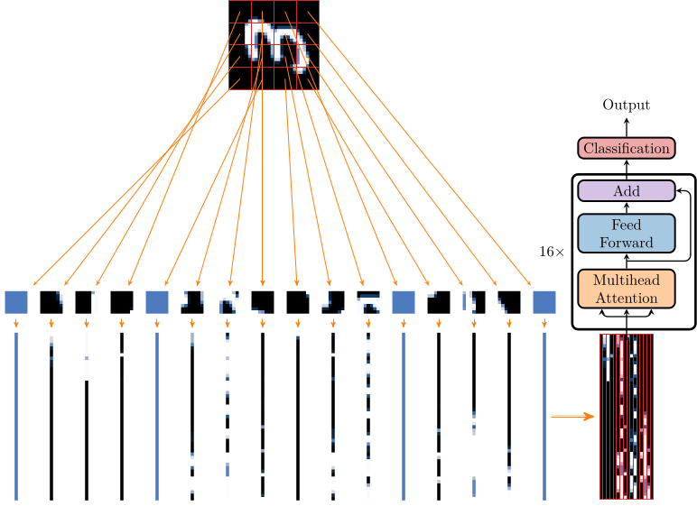
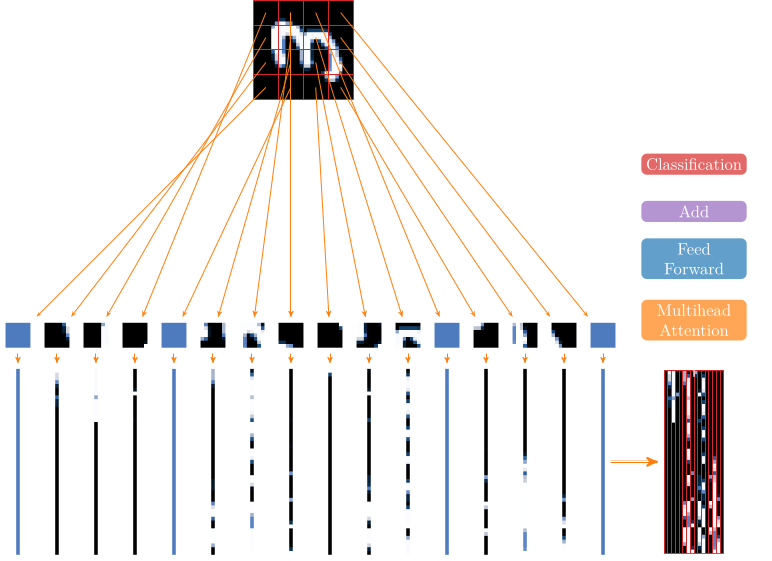
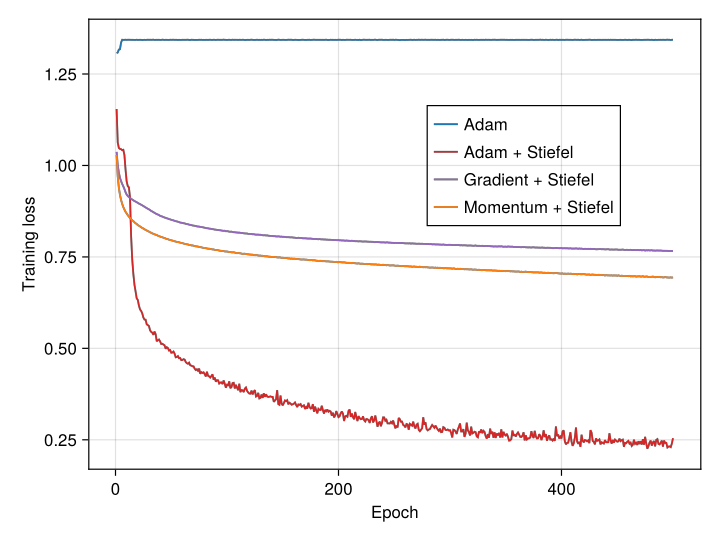
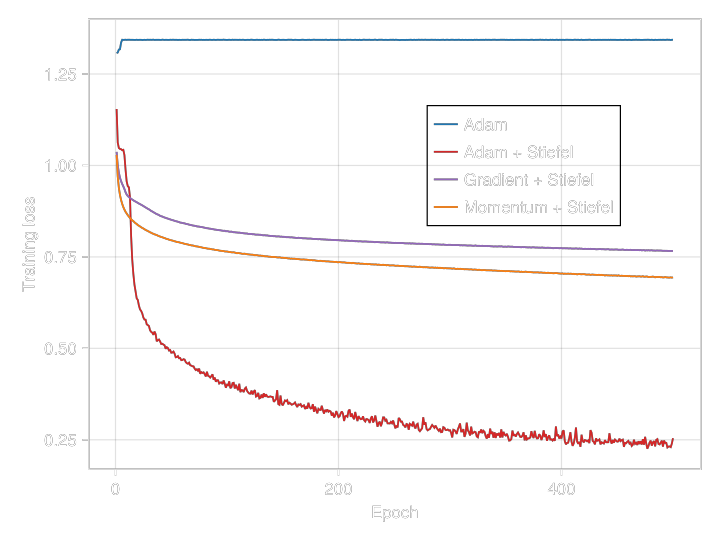

MNIST Tutorial
In this tutorial we show how we can use GeometricMachineLearning to build a vision transformer and apply it for MNIST [2], while also putting some of the weights on a manifold. This is also the result presented in [1].
GMLDatasets gets the data set from MLDatasets and hands it back as a DataLoader. For this we need to specify a patch length[1]:
using GeometricMachineLearning
using GMLDatasets
const patch_length = 7
dl = mnist_data_loader(:train; patch_length = patch_length, suppress_info = true)To train on a GPU, pass the transfer function — cu from CUDA.jl [3], or Metal.mtl on an Apple silicon Mac — as transform. It is applied to the images and to the labels before the patches are cut, so the splitting and the one-hot encoding run on the device too:
using CUDA
dl = mnist_data_loader(:train; patch_length = patch_length, transform = cu)In order to apply the transformer to a data set we should typically cast these data into a time series format. MNIST images are pictures with $28\times28$ pixels. Here we cast these images into time series of length 16, so one image is represented by a matrix $\in\mathbb{R}^{49\times{}16}$.
This is visualized below:


split_and_flatten splits each image into a number of patches according to the keyword arguments patch_length and number_of_patches. We load the test data the same way:
dl_test = mnist_data_loader(:test; patch_length = patch_length, suppress_info = true)We next define the model with which we want to train:
const n_heads = 7
const L = 16
const add_connection = false
model1 = ClassificationTransformer(dl;
n_heads = n_heads,
L = L,
add_connection = add_connection,
Stiefel = false)
model2 = ClassificationTransformer(dl;
n_heads = n_heads,
L = L,
add_connection = add_connection,
Stiefel = true)Here we have chosen a ClassificationTransformer, i.e. a composition of a specific number of transformer layers composed with a classification layer. We also set the Stiefel option to true, i.e. we are optimizing on the Stiefel manifold.
We now have to initialize the neural network weights. This is done with the constructor for NeuralNetwork:
backend = GeometricMachineLearning.networkbackend(dl)
T = eltype(dl)
nn1 = NeuralNetwork(model1, backend, T)
nn2 = NeuralNetwork(model2, backend, T)We still have to initialize the optimizers:
const batch_size = 2048
const n_epochs = 500
# an instance of batch is needed for the optimizer
batch = Batch(batch_size, dl)
opt1 = Optimizer(Adam(T), nn1)
opt2 = Optimizer(Adam(T), nn2)And with this we can finally perform the training:
loss_array1 = opt1(nn1, dl, batch, n_epochs, FeedForwardLoss())
loss_array2 = opt2(nn2, dl, batch, n_epochs, FeedForwardLoss())We furthermore optimize the second neural network (with weights on the manifold) with the GradientMethod and the MomentumMethod:
nn3 = NeuralNetwork(model2, backend, T)
nn4 = NeuralNetwork(model2, backend, T)
opt3 = Optimizer(GradientMethod(), nn3; step_size = T(0.001))
opt4 = Optimizer(MomentumMethod(T(0.5)), nn4; step_size = T(0.001))For training we use the same data, the same batch and the same number of epochs:
loss_array3 = opt3(nn3, dl, batch, n_epochs, FeedForwardLoss())
loss_array4 = opt4(nn4, dl, batch, n_epochs, FeedForwardLoss())And we get the following result:


We see that the loss value for the Adam optimizer without parameters on the Stiefel manifold is stuck at around 1.34 which means that it always predicts the same value. So in 1 out of ten cases we have error 0 and in 9 out of ten cases we have error $\sqrt{2}$, giving
\[ \sqrt{2\frac{9}{10}} = 1.342,\]
which is what we see in the error plot.
We can also call GeometricMachineLearning.accuracy to obtain the test accuracy instead of the training error:
(accuracy(nn1, dl_test), accuracy(nn2, dl_test), accuracy(nn3, dl_test), accuracy(nn4, dl_test))(0.0974, 0.8613, 0.5518, 0.6351)We note here that conventional convolutional neural networks and other vision transformers achieve much better accuracy on MNIST in a training time that is often shorter than what we presented here. Our aim here is not to outperform existing neural networks in terms of accuracy on image classification problems, but to demonstrate two things: (i) in many cases putting weights on the Stiefel manifold (which is a compact space) can enable training that would otherwise not be possible and (ii) as is the case with standard Adam, the manifold version also seems to achieve similar performance gain over the gradient and momentum optimizer. Both of these observations are demonstrated by the figure above.
Library Functions
mnist, mnist_data_loader, the DataLoader constructor for labelled images, split_and_flatten and onehotbatch are documented in the Library section of the home page. This page deliberately does not repeat them: a docstring rendered in two places makes every @ref to it resolve to whichever of the two Documenter saw last, which was this one, so the reference on the home page linked away from itself.
accuracy, ClassificationTransformer and ClassificationLayer are documented in the GeometricMachineLearning reference.
References
- [1]
- B. Brantner. Generalizing Adam To Manifolds For Efficiently Training Transformers, arXiv preprint arXiv:2305.16901 (2023).
- 1
mnist_data_loaderbuilds theDataLoaderwithsplit_and_flattenandonehotbatchinternally.